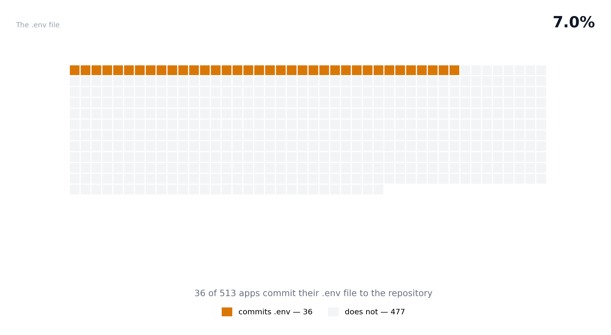
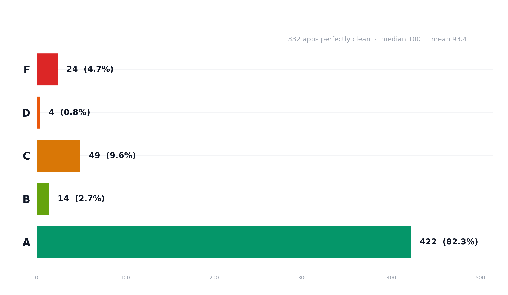
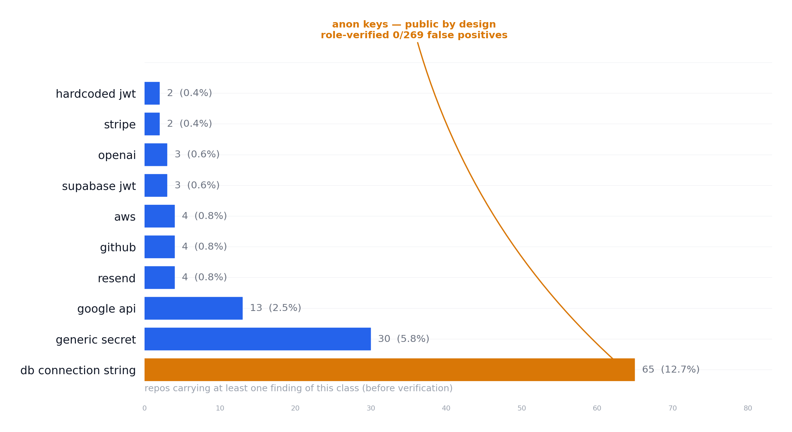
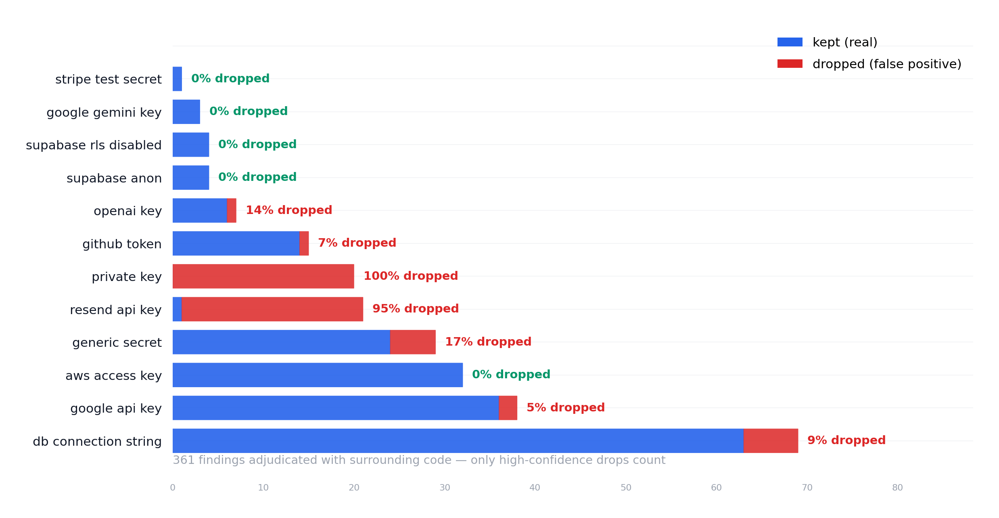
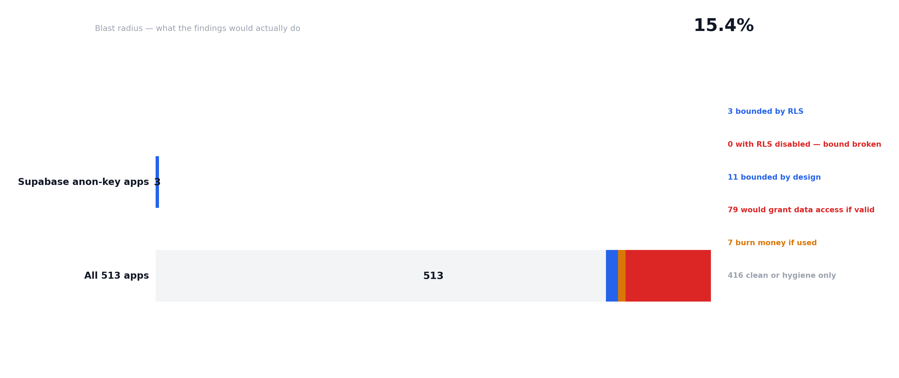
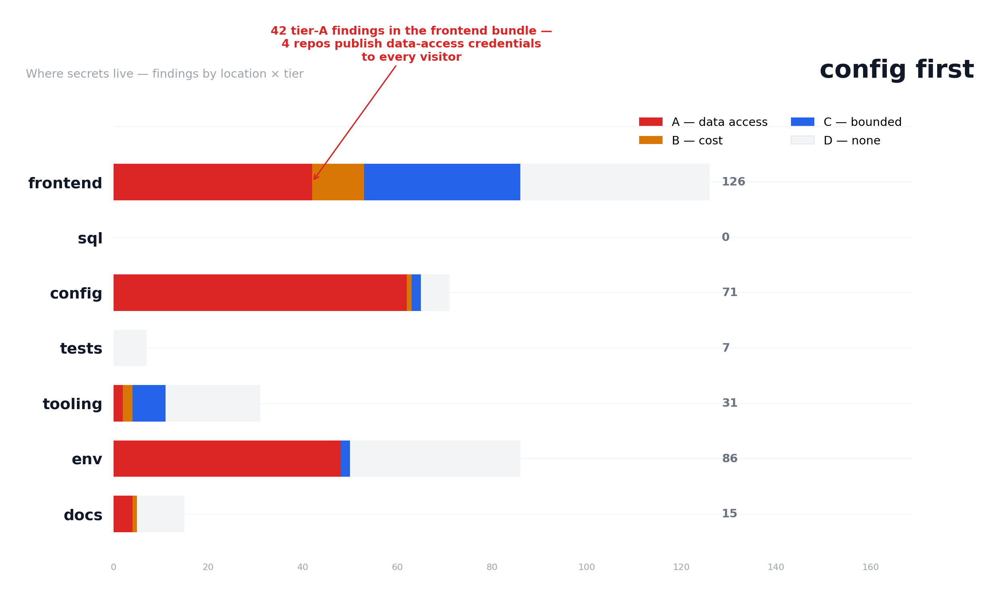

The .env story ends here nearly a non-event
Where Lovable's 27.5% made .env the headline, v0's 7.0% confirms
the pattern: the exposure tracks the generator's workflow, not AI
coding itself. v0 outputs frontend components — fewer backends,
fewer env files to wire, fewer env files to leak.

Fewer env files does not mean cleaner repos. 38.2% of v0
repos have no root .gitignore (Lovable: 10.4%) and 24.4%
carry duplicated file families (Lovable: 8.9%). v0 generates
sloppier scaffolding — the question is what it leaks instead.
Most apps are clean but the story is different
82.3% grade A and 64.7% are perfectly clean. The F rate is 4.7%,
below Lovable's 7.3%. But the A-band is clean for a different
reason: v0 does not default to Supabase — there are almost no anon
keys, no service-role JWTs, no RLS stories. The credential surface
is smaller. The question is where it hides.

Clean grades, but different reasons: v0 generates frontend components
without env wiring or Supabase defaults. Where Lovable's clean
apps are safe because their env is public-by-design, v0's clean apps
are safe because they never wired the dangerous bits in the first
place.
The leak is in the code DB strings, not anon keys
Lovable's biggest class is Supabase anon keys. v0's is DB connection
strings — nearly triple Lovable's rate (12.7% vs 4.7%). These are
hardcoded in source files, not in .env. Live MongoDB Atlas URIs and
Supabase Postgres URLs with real passwords, kept 63/69 through
adjudication. The leak mechanics are inverted.

No Supabase anon keys. No service-role JWTs. No RLS stories. v0's
credential surface is dominated by database connection strings
hardcoded in app source — the kind of credential a backend deployment
would need, but v0 puts directly in the code.
Exhaustive verification — no subsample 243/243 findings
The Lovable study verified a 50-repo subsample. Here, every finding
in every repo with findings was adjudicated. 55 dropped (22.6%)
and the drops are explainable — not scattered.

The private-key findings (20) were all vendored Go testdata —
automatically pruned by the pkg/mod fix. The resend
findings (20/21) exposed a pattern bug: PIL internals, minified JS,
and image filenames matching the re_ prefix. The
pattern was tightened and regression-tested. And the 32 AWS
keys: 0/32 dropped — all real.
The structural exposure is real blast radius
What would the committed credentials actually do? 15.4% of v0 apps
would grant data access if their credentials were used — and 14.0%
is structurally verified: live DB passwords, GitHub PATs, AWS keys.
These are in code and config, not in .env.

The structural share is nearly double Lovable's
(14.0% vs 7.3%). Lovable's exposure is broad and shallow (anon
keys bounded by RLS); v0's is narrow and deep — live database
passwords and GitHub PATs in frontend clone apps, readable by
every visitor.
The mechanics are inverted where secrets hide
Lovable's data-access credentials live in docs and .env. v0's live
in config files and the frontend bundle. The docs are almost clean.
The danger doesn't hide in the places you'd expect.

Config is the #1 home for v0 secrets: MCP manifests,
JSON config, and n8n automation files with embedded service-role
keys. The frontend bundle carries 42 tier-A findings
— GitHub PATs in clone apps (ghp_ tokens in
src/core/api/get/*.tsx), published to every visitor.
And docs carry almost nothing — the opposite of Lovable.
Methodology
Signal: data-v0- attributes — v0.dev writes one into every generated component. The frame is the complete enumerable surface: data-v0- language:HTML (671 hits) merged with data-v0- extension:tsx (376), deduplicated to 533 public repos; 513 downloaded (19 exceeded the 150 MB cap, 1 gone). 99.8% platform-confirmed by the scan.
Scan: the same Septr rules engine as the Lovable study, offline, over each repo's GitHub tarball. Existence checks, bundle checks, duplication, content-derived .env severity.
Verification: all 243 findings across all 95 repos with findings — exhaustive, no subsample — adjudicated with surrounding code under the only-high-confidence-drops-count rule. 55 dropped (22.6%), 188 kept.
Ethics: aggregates and anonymized rows only; no repo-to-credential mapping; no confirmed-live testing.